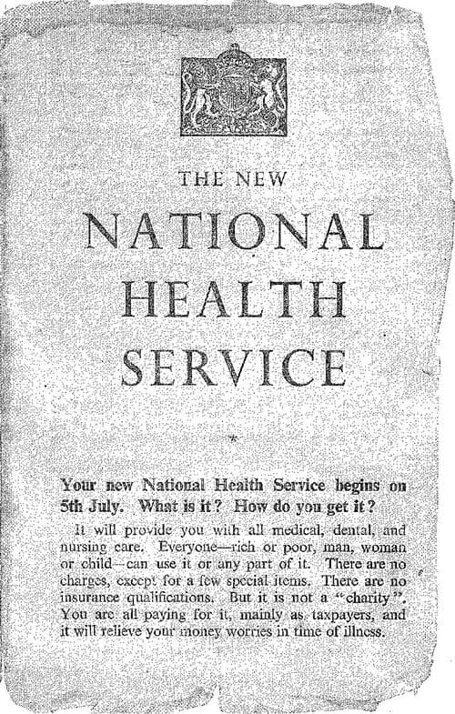
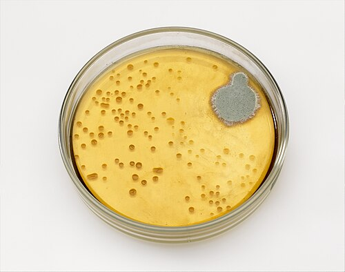
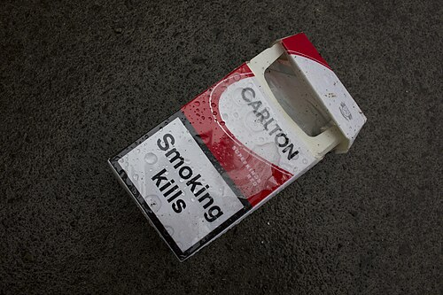

Meoncross School | History Department
Modern
Paper 1: Medicine Through Time with the Western Front
Teacher Workbook - Scholar:
Class:
Teacher:
Unit Checklist Tracker
| Lesson Title / Exam Task |
Page |
Do Now |
Tasks |
Review |
Score |
| L1: KT4.1: How have modern discoveries changed our understanding of illness? | 3 | / 10 | 〇 | | |
| Exam Question: | | N/A | O | | |
| L2: KT4.2: How have prevention and treatment advanced in the modern era? | 6 | / 10 | 〇 | | |
| Exam Question: | | N/A | O | | |
| L3: KT4.3: How was Penicillin discovered and mass-produced? | 10 | / 10 | 〇 | | |
| Exam Question: | | N/A | O | | |
| L4: KT4.4: How has the government tackled the modern epidemic of Lung Cancer? | 13 | / 10 | 〇 | | |
| Exam Question: | | N/A | O | | |
L1: KT4.1: How have modern discoveries changed our understanding of illness?
(See Textbook Page 3)
Learning Objectives
Explain how the discovery of DNA and the Human Genome Project transformed the understanding of genetic and hereditary illnesses.
Analyze the influence of lifestyle choices on modern health and the impact of technology on medical diagnosis.
The 20th century witnessed a monumental shift in medicine. With Germ Theory firmly established, scientists soon realised that microbes did not cause every single illness. The groundbreaking discovery of DNA finally unlocked the mystery of hereditary diseases, whilst researchers proved that our own modern lifestyle choices were causing new killer illnesses like cancer. Simultaneously, a technological revolution in diagnosis completely transformed how doctors accurately identified what was wrong with their patients.
Did you know?
- 1953: The exact year James Watson and Francis Crick successfully discovered the double-helix structure of DNA.
- 1990: The launch year of the Human Genome Project, a massive global scientific effort to decode and map all human DNA.
- 1950: The year the British Medical Research Council published a conclusive study firmly linking smoking cigarettes to lung cancer.
Do Now Activity
Score: / 10
1. What disease did Edward Jenner vaccine against in 1796?
2. What did Edward Jenner observe that led to his vaccine?
3. Who discovered the cause of cholera in 1854?
4. What structure did Watson and Crick discover in 1953?
5. What is the function of DNA in relation to disease?
6. Name one modern lifestyle factor that causes disease.
7. What did Harvey prove wrong about Galen's theories of blood?
8. Who published the Germ Theory in 1861?
9. Why did the mapping of the human genome (completed in 2003) not lead to immediate cures?
10. Which female scientist's X-ray crystallography photo was vital to Watson and Crick's DNA discovery?
Vocabulary Check
Fill in the blanks using the vocabulary words below.
DNA | Human Genome Project | Biopsy
In the twentieth century, diagnosis shifted from a doctor simply observing a patient's symptoms to rigorous laboratory testing. To identify cancers early, doctors today often perform a on a patient's tissue, examining the sample under powerful microscopes. This transition to evidence-based science was heavily accelerated by breakthroughs in genetics. The 1953 discovery of proved how traits are passed between generations, which eventually led scientists to launch the massive to decode and map the complete set of human genes.
Source A: DNA Structure
Watson and Crick with their model of the DNA double helix in 1953.
DNA and Modern Genetics
By 1900, doctors knew that microbes caused infectious diseases, but they still couldn't explain hereditary diseases like Haemophilia. In 1953, James Watson and Francis Crick, using X-ray photographs taken by Rosalind Franklin, discovered the double-helix structure of DNA. This was a monumental breakthrough because it proved how genetic information was passed from parents to children.
In 1990, scientists launched the Human Genome Project, an international effort to map every single gene in the human body. By 2000, they had successfully mapped the entire genome. This incredible achievement allowed scientists to identify the specific genes responsible for diseases like breast cancer and cystic fibrosis, opening the door to genetic screening and personalized medicine.
James Watson & Francis Crick
Rosalind Franklin
The Discovery of DNA and Genetics
In 1953, scientists James Watson and Francis Crick famously discovered the double-helix structure of DNA at Cambridge University.
Their discovery built heavily upon the vital X-ray crystallography image (Photo 51) taken by Rosalind Franklin and Maurice Wilkins in 1951, which provided the exact physical dimensions they needed.
This breakthrough finally proved how characteristics and hereditary diseases (illnesses caused by genetic factors) are passed from parents to children.
In 1990, the Human Genome Project was launched to decode and map the exact purpose of every single gene in the human body, a massive global effort completing its first draft in 2000. Discovering DNA was a monumental breakthrough because it finally allowed scientists to identify the specific genes that cause hereditary conditions (like cystic fibrosis and Down's syndrome), leading to modern genetic testing and preventative treatments.
Knowledge Check (Q2)
How did Watson and Crick's discovery of the double-helix structure of DNA help scientists search for the causes of hereditary diseases?
- A. It provided a complete blueprint of human biology, allowing scientists to identify specific faulty genes responsible for conditions like cystic fibrosis.
- B. It proved that hereditary diseases were caused by viruses.
- C. It allowed scientists to create antibiotics to kill hereditary diseases.
- D. It proved that hereditary diseases were caused by miasma.
Q1. Identify who discovered the double-helix structure of DNA in 1953.
The Influence of Lifestyle Factors
As infectious diseases declined during the 20th century, doctors realised that modern lifestyle choices were causing a massive rise in new, preventable illnesses.
In 1950, the British Medical Research Council published a study conclusively linking smoking to the huge rise in lung cancer. It is also directly linked to high blood pressure, throat cancer, and heart disease.
Scientists also proved that a poor diet heavily impacts health: eating too much sugar causes incurable type 2 diabetes, while eating too much fat can lead to heart disease.
Other dangerous lifestyle factors identified include binge drinking alcohol (causing liver and kidney diseases) and unprotected sex or sharing needles (spreading diseases like HIV). Understanding lifestyle factors fundamentally changed medicine because it proved that many modern killer diseases are entirely preventable, shifting the government's focus towards public health campaigns and personal responsibility.
Q3. Describe the goal of the Human Genome Project.
Improvements in Diagnosis and Technology
At the start of the 20th century, doctors diagnosed patients largely by observing their external symptoms and making a knowledgeable guess.
However, modern medicine shifted towards laboratory testing (such as examining skin or tissue samples in a biopsy) and high-tech diagnostic equipment.
Blood tests (from the 1930s) now allow doctors to test for an enormous number of conditions using the patient's blood without needing invasive surgery.
Advances in imaging include traditional x-rays (1890s) for broken bones, ultrasound scans (1940s) for internal organs, and CT and MRI scans (from the 1970s) which create detailed 3D images to diagnose tumours and soft tissue injuries.
Other tools include ECGs (electro cardiograms) to track heart activity and endoscopes (flexible cameras) to see inside the digestive system. This technological revolution meant that diagnosis was no longer based on a doctor's guesswork; instead, doctors could identify the exact microbe, tumour, or internal issue causing the illness, allowing for highly accurate, targeted treatments.
Q4. Explain why Germ Theory could not explain all illnesses.
Q5. Evaluate the impact of the discovery of DNA on modern medicine.
Documentary / General Notes
Title / Topic: ______________________________________________________________
Pair & Share Activity
Q6. Prompt: Which modern development has had a more significant impact on our understanding of the causes of illness: the discovery of genetic factors (DNA and hereditary disease) or the scientific identification of lifestyle factors (smoking, diet, and alcohol)?
Think: Jot down your choice and one piece of evidence from the sources (e.g., how mapping the genome allows women to identify risks for breast cancer, versus how smoking is proven to be the biggest cause of preventable diseases in the world, causing heart disease and lung cancer).
Historian's Corner: The Debate over the Significance of DNA vs. Germ Theory
GCSE historians frequently debate whether the 1953 discovery of the structure of DNA represents a more significant turning point in understanding illness than Pasteur's 1861 Germ Theory. Some historians argue that DNA is the ultimate breakthrough because it finally solved the mystery of non-communicable, hereditary conditions (such as Down's syndrome, haemophilia, and cystic fibrosis) that germs could never explain. However, other historians point out that while Germ Theory immediately transformed surgery, public health, and vaccination in the nineteenth century, the practical impact of DNA has been much slower to develop. Although we can map the genome, genetic treatments like gene therapy are still not widely available for most diseases, meaning the everyday clinical impact of genetics remains a future promise rather than a current reality.
Exam Practice
Q7. 'The discovery of DNA was the most significant breakthrough in understanding the causes of illness in the period c1900-present.' How far do you agree? Explain your answer. (16 marks) You may use the following in your answer:
• Watson and Crick
• Lifestyle factors
You must also use information of your own.
Exam Practice
Q8. Explain why the discovery of the structure of DNA was a significant breakthrough in understanding the causes of illness. (12 marks)
Q9. Explain one way in which ideas about the cause of illness in the modern period (c1900-present) were different from ideas in the period c1700-c1900. (4 marks)
Exam Practice
1. 'The discovery of DNA was the most significant breakthrough in understanding the causes of illness in the period c.1900-present.' How far do you agree? Explain your answer. (16 marks)
You may use the following in your answer:
- Watson and Crick
- Lifestyle factors
You must also use information of your own.
L2: KT4.2: How have prevention and treatment advanced in the modern era?
(See Textbook Page 6)
Learning Objectives
Explain how scientific and technological developments led to the creation of magic bullets and antibiotics.
Analyze the impact of the National Health Service (NHS) on the provision of and access to medical care.
The 20th century transformed medicine from a system that merely managed symptoms into one that actively destroyed diseases. The discovery of targeted chemical cures and powerful antibiotics saved millions of lives from previously fatal infections. Meanwhile, the creation of the NHS revolutionised access to these high-tech treatments, ensuring that for the first time in history, life-saving healthcare and active prevention campaigns were available to everyone, regardless of their wealth.
Did you know?
- 1909: The year Paul Ehrlich's team discovered Salvarsan 606, the world's very first 'magic bullet' to cure syphilis.
- 1948: The year the National Health Service (NHS) was officially launched, providing free healthcare to all.
- 1956: The year the polio vaccine was introduced in the UK, saving thousands of children from death and paralysis.
Do Now Activity
Score: / 10
1. What structure did Watson and Crick discover in 1953?
2. What is the function of DNA in relation to disease?
3. Name one modern lifestyle factor that causes disease.
4. What is a 'magic bullet'?
5. Name the first magic bullet, discovered by Paul Ehrlich in 1909.
6. What was established in Britain in 1948 to provide free medical care?
7. What did Edward Jenner vaccine against in 1796?
8. How did John Snow prove that cholera was spread by contaminated water in 1854?
9. Who was the Minister of Health responsible for establishing the NHS in 1948?
10. Name the second magic bullet, discovered by Gerhard Domagk in 1932 to treat strep infections.
Vocabulary Check
Write a historically accurate sentence connecting two terms from the glossary box below.
Magic Bullet | Antibiotics | National Health Service (NHS)
Your Sentence:
Source A: The NHS Established

A poster from 1948 advertising the establishment of the National Health Service.
High-Tech Diagnostics and Magic Bullets
In the 20th century, diagnosing illness shifted from observing external symptoms to looking inside the body. Marie Curie's work with radiation led to the widespread use of X-rays, while modern technology introduced Ultrasound, MRI, and CT scans. Doctors no longer had to cut a patient open to see what was wrong.
Treatment also evolved rapidly. In 1909, Paul Ehrlich discovered Salvarsan 606, the first 'Magic Bullet'-a chemical compound that targeted and killed the specific bacteria causing syphilis without harming the rest of the body. Later, in 1932, Gerhard Domagk discovered the second magic bullet, Prontosil, which cured blood poisoning. These synthetic chemicals marked the beginning of modern pharmaceutical treatments.
Marie Curie
Paul Ehrlich
Gerhard Domagk
Advances in Medicines: Magic Bullets and Antibiotics
In 1909, Paul Ehrlich's team discovered Salvarsan 606, the first 'magic bullet'. It was a highly toxic, arsenic-based chemical compound that specifically targeted and destroyed the syphilis microbe inside the body without killing the rest of the patient's cells (Common Misconception: never call Salvarsan an antibiotic!).
In 1932, Gerhard Domagk discovered a second magic bullet, Prontosil, which cured some types of blood poisoning. Scientists realised the active ingredient was sulphonamide, paving the way for targeted chemotherapy and cures for pneumonia and scarlet fever.
The first true antibiotic (created using microorganisms rather than chemicals) was penicillin, discovered by Alexander Fleming in 1928 and developed into a mass-produced drug by Florey and Chain in the 1940s. The development of magic bullets and antibiotics revolutionised medicine because, for the first time, doctors possessed targeted drugs that actively hunted down and killed deadly bacteria inside the human body.
Knowledge Check (Q2)
What is the key scientific difference between an antiseptic like carbolic acid and a magic bullet like Salvarsan 606?
- A. Antiseptics are used on the outside of the body to prevent infection, whereas magic bullets are injected into the body to target specific microbes.
- B. Antiseptics are created from microorganisms, whereas magic bullets are synthetic chemicals.
- C. Antiseptics are used to cure viruses, whereas magic bullets cure bacteria.
- D. There is no difference; they are both the same thing.
Q1. Identify the first 'Magic Bullet' discovered in 1909.
Alexander Fleming
Howard Florey & Ernst Chain
Improved Access to Care: The Impact of the NHS
Before the 20th century, seeing a doctor was too expensive for the poorest members of society. In 1942, the Beveridge Report called for a system that looked after people "from the cradle to the grave".
In 1948, Minister of Health Aneurin Bevan launched the National Health Service (NHS). It provided free healthcare at the point of delivery, paid for by national taxes.
The NHS brought hospitals, GPs (General Practitioners), dentists, and maternity care under one massive national organisation, eventually leading to a massive increase in the nation's life expectancy. The NHS fundamentally transformed British society because it ensured that every single citizen finally had equal access to vital medical diagnosis and treatment, entirely removing the fear that getting sick would bankrupt a family.
Q3. Describe how Magic Bullets work.
High-Tech Medical and Surgical Treatment
With pain and infection largely solved in the 19th century, modern surgery became highly advanced. The first successful kidney transplant took place in 1956, followed by the first heart transplant in 1967.
Keyhole surgery (laparoscopic surgery) and microsurgery use tiny cameras and narrow surgical instruments to operate inside the body through tiny incisions, drastically reducing recovery times and trauma.
Other high-tech hospital treatments include radiotherapy and chemotherapy to shrink and destroy cancer cells, and dialysis machines to wash the blood of patients with kidney failure. The rapid development of high-tech treatments turned previously fatal internal conditions and organ failures into manageable problems, drastically extending the lives of severely ill patients.
Q4. Explain how diagnosing illness changed in the 20th century.
New Approaches to Prevention: Mass Vaccinations and Lifestyle Campaigns
Building on Pasteur and Koch's work, the government funded mass vaccination campaigns to wipe out deadly childhood diseases, including diphtheria (1942), polio (1956), and measles (1968).
Because lifestyle factors like smoking and poor diet were proven to cause illnesses like cancer and heart disease, the government shifted from a 'laissez-faire' attitude to active intervention.
The government uses 'nudge tactics' (like the Sugar Tax) and laws (the 2007 smoking ban in public places) to force healthier choices.
They also run major advertising campaigns, such as Change4Life (encouraging families to eat less sugar and exercise more) and Stoptober (encouraging smokers to quit). These new approaches shifted the government's focus away from just treating sick patients and towards actively educating the public to prevent deadly diseases from occurring in the first place.
Q5. To what extent did the discovery of Magic Bullets revolutionize treatment?
Documentary / General Notes
Title / Topic: ______________________________________________________________
Pair & Share Activity
Q6. Prompt: Which development was the most significant turning point in twentieth-century healthcare: the scientific breakthrough of antibiotics, or the political creation of the National Health Service (NHS)?
Think: Jot down your choice and one piece of evidence from the sources (e.g., how penicillin cured previously fatal infections, or how the NHS removed the fear of poverty by providing free healthcare for millions).
Historian's Corner: The Debate over the Significance of the Beveridge Report in the Foundation of the NHS
Historians debate the extent to which the 1942 Beveridge Report was the primary catalyst for the creation of the NHS in 1948. Traditional consensus histories argue that William Beveridge's report, which recommended tackling the 'five giants' of want, disease, ignorance, squalor, and idleness 'from the cradle to the grave', created an irresistible democratic mandate that forced the post-war Labour government to act. However, revisionist political historians argue that the Beveridge Report was merely a set of recommendations and that the true turning point was the political tenacity of Health Minister Aneurin Bevan. They point out that Bevan had to wage a fierce political battle against the British Medical Association (BMA), who heavily resisted state control, and that the NHS was only realized because Bevan agreed to 'stuff their mouths with gold' by allowing consultants to keep their lucrative private practices alongside their NHS hospital roles.
Exam Practice
Q7. 'Alexander Fleming was the most important individual in the development of penicillin.' How far do you agree? Explain your answer. (16 marks + 4 marks for SPaG)
Exam Practice
Q8. Explain why there was rapid progress in the development of penicillin in the 1940s. (12 marks)
Q9. Explain one way in which the treatment of illness in the modern period (c1900-present) was different from the treatment of illness in the period c1700-c1900. (4 marks)
Exam Practice
1. 'Alexander Fleming was the most important individual in the development of penicillin.' How far do you agree? Explain your answer. (16 marks + 4 marks for SPaG) (16 marks)
You may use the following in your answer:
- Staphylococcus
- Florey and Chain
You must also use information of your own.
L3: KT4.3: How was Penicillin discovered and mass-produced?
(See Textbook Page 10)
Learning Objectives
Contrast the roles of Alexander Fleming with those of Howard Florey and Ernst Chain in the penicillin breakthrough.
Analyze how the factors of government intervention, science and technology, and war collaborated to enable the mass production of penicillin.
Before the 20th century, a simple scratch or an infected wound could easily lead to fatal blood poisoning. The discovery of penicillin, the world's very first antibiotic, marked a monumental turning point in modern medicine. Driven by the desperate, bloody necessity of the Second World War, scientists finally managed to harness naturally occurring microbes to actively destroy bacterial infections, saving millions of lives and permanently transforming modern healthcare.
* The_Penicillin_Revolution.pptx19mb
Did you know?
- 1928: The exact year Alexander Fleming accidentally discovered penicillin mould killing bacteria in his unwashed petri dish.
- 1941: The year Florey and Chain successfully treated their first human patient, Albert Alexander, proving the purified drug worked.
- 15%: The estimated percentage of injured Allied soldiers whose lives were saved by mass-produced penicillin during WWII.
Do Now Activity
Score: / 10
1. What is a 'magic bullet'?
2. Name the first magic bullet, discovered by Paul Ehrlich in 1909.
3. What was established in Britain in 1948 to provide free medical care?
4. Who discovered Penicillin by accident in 1928?
5. Which two scientists at Oxford developed Penicillin into a usable drug?
6. What major global event drove the mass production of Penicillin?
7. Who published the Germ Theory in 1861?
8. Who introduced antiseptic surgery using carbolic acid in 1865?
9. What did Fleming observe in his petri dish that led to the discovery of Penicillin?
10. How did the US government assist in the development of Penicillin?
Vocabulary Check
Write a clear definition and a historically accurate sentence for the term: Antibiotic
Source A: Fleming and Penicillin

Alexander Fleming's original petri dish showing Penicillium mould killing staphylococci bacteria.
The Miracle of Penicillin
In 1928, Alexander Fleming left a petri dish of staphylococcus bacteria out while on holiday. When he returned, he noticed a mould (Penicillium) growing on it, which was actively killing the bacteria. He had accidentally discovered the world's first antibiotic. However, Fleming couldn't extract enough pure penicillin to use as a medicine, so he simply wrote a paper on it and gave up.
Ten years later, two scientists named Florey and Chain read Fleming's paper. With funding from the US government during World War II, they developed a way to mass-produce the drug. By 1944, there was enough Penicillin to treat all the Allied casualties on D-Day. After the war, mass production techniques were shared globally, making antibiotics the most widely used medical treatment in history.
Alexander Fleming's Accidental Discovery (1928)
In 1928, the Scottish scientist Alexander Fleming went on holiday and accidentally left a stack of petri dishes containing staphylococcus bacteria unwashed on his laboratory bench at St Mary's Hospital, London.
Upon returning, he noticed a spore of mould had blown into a dish and grown, creating a clear, bacteria-free zone around itself. He identified this bacteria-killing mould as Penicillium notatum.
Fleming published his findings in a medical journal in 1929, correctly stating that the mould juice killed harmful bacteria.
However, he lacked the funding and advanced chemical equipment required to extract pure penicillin. He lost interest, and his discovery was largely ignored for a decade. Fleming's accidental observation was a crucial first step, but because he could not purify it or perform trials on infected humans, penicillin remained just an interesting laboratory observation rather than a usable drug.
Q1. Identify who discovered the first antibiotic in 1928.
The Brilliant Teamwork of Florey and Chain (1939-1941)
In 1939, a highly skilled team of scientists at Oxford University, led by Howard Florey and Ernst Chain, read Fleming's forgotten article and decided to investigate further.
Using advanced freeze-drying techniques and complex chemical processes, Chain successfully managed to extract a tiny amount of pure penicillin powder.
In 1940, they successfully cured mice that had been deliberately infected with deadly streptococcus bacteria.
In 1941, they conducted their first human trial on a dying policeman named Albert Alexander, who had contracted a severe infection from a rose thorn scratch. He recovered miraculously within days, but tragically died when their tiny supply of the drug ran out. Florey and Chain's collaborative research proved undeniably that penicillin could safely cure life-threatening bacterial infections inside the human body without harming the patient.
Q2. Describe how Penicillin was discovered.
Mass Production and the Second World War
Despite proving its incredible potential, Florey could not persuade British chemical companies to mass-produce the drug because they were entirely focused on making explosives for the Second World War.
In July 1941, Florey travelled to the USA to persuade the American government to invest. Once the USA joined the war in December 1941, the government gave massive interest-free loans to huge chemical companies to build colossal factories, pioneering the breakthrough 'deep-fermentation tank' method to grow the mold on an industrial scale.
By 1943, mass production was fully underway.
By D-Day (June 1944), enough penicillin had been manufactured using these deep-fermentation tanks to treat every single infected Allied casualty, eventually saving an estimated 15% of injured soldiers from dying of gangrene or blood poisoning. The desperation of the Second World War finally forced governments to pour massive financial investment into mass-producing penicillin. (Common Misconception: Students frequently state that Fleming mass-produced penicillin during WWI. You must remember the strict chronology: Fleming made the accidental discovery in 1928, it remained a laboratory curiosity until Florey and Chain purified it in 1940, and mass production only scaled up during WWII in 1943-44.)
Knowledge Check (Q5)
What was the main scientific and practical limitation that caused Fleming to abandon his work on penicillin in 1931?
- A. He realized that penicillin was highly toxic to humans.
- B. He could not secure funding from the government because it was peacetime.
- C. He lacked the chemical expertise and facilities to extract and purify penicillin in large enough quantities for human trials.
- D. He was drafted into the army to fight in World War II.
Q3. Explain the roles of Florey and Chain in the development of Penicillin.
Q4. Evaluate the role of World War II in the mass production of Penicillin.
Documentary / General Notes
Title / Topic: ______________________________________________________________
Pair & Share Activity
Q6. Prompt: Who deserves the most credit for the penicillin breakthrough: Alexander Fleming for his accidental discovery in 1928, or Howard Florey and Ernst Chain for their scientific development and therapeutic isolation of the drug in the 1940s?
Think: Jot down your choice and one piece of evidence from the sources (e.g., Fleming recognizing and publishing the mould's bacteria-killing properties in 1928, or the Oxford team actually turning it into a usable drug and proving its clinical effectiveness on humans).
Historian's Corner: The Debate over the 'Myth' of Fleming and the Penicillin Breakthrough
For decades, popular historical accounts portrayed Alexander Fleming as the sole hero of the penicillin story, celebrating his accidental observation of the Penicillium mould in 1928 as an instant cure. However, revisionist historians, such as Patricia Harding, actively challenge this traditional narrative, arguing that it propagates a 'myth'. They point out that Fleming actually abandoned his work on penicillin by 1931, having failed to isolate the active substance or prove that it could kill bacteria in living human blood. Revisionists argue that the true breakthrough belongs to Howard Florey, Ernst Chain, and the Oxford research team, who systematically isolated the drug in 1940 and proved its therapeutic value, but were initially ignored by a public captivated by the romantic narrative of Fleming's accident.
Exam Practice
Q7. Explain why there was rapid progress in disease prevention in the period c1900-present. (12 marks)
Exam Practice
Q8. Explain why the government took a more active role in preventing disease in the period c1900-present. (12 marks)
Q9. Explain one way in which ideas about the prevention of illness in the modern period (c1900-present) were different from the medieval period (c1250-c1500). (4 marks)
Exam Practice
1. Explain why there was rapid progress in disease prevention in the period c1900-present. (12 marks)
You may use the following in your answer:
- Government vaccination campaigns
- Legislation
You must also use information of your own.
L4: KT4.4: How has the government tackled the modern epidemic of Lung Cancer?
(See Textbook Page 13)
Learning Objectives
Explain how modern science and technology have transformed the diagnosis and treatment of lung cancer since c1900.
Analyze the effectiveness and changing focus of government legislation to prevent smoking-related lung cancer.
Lung cancer was incredibly rare in the nineteenth century but rapidly became the second most common cancer in the UK by the twenty-first century. After the link between smoking and cancer was conclusively proven in 1950, medicine had to develop advanced high-tech methods to diagnose and treat this deadly disease. Simultaneously, the crisis forced the government to abandon its reluctance to interfere in personal habits, leading to aggressive modern prevention campaigns.
Did you know?
- 1950: The year the British Medical Research Council published its conclusive study linking cigarette smoking to lung cancer.
- 2007: The year the government passed a law banning smoking in all enclosed public workplaces and raised the legal age for buying tobacco to 18.
- 85%: The approximate percentage of lung cancer cases that are caused by people who smoke or have previously smoked.
Do Now Activity
Score: / 10
1. Who discovered Penicillin by accident in 1928?
2. Which two scientists at Oxford developed Penicillin into a usable drug?
3. What major global event drove the mass production of Penicillin?
4. What lifestyle choice was definitively linked to lung cancer in the 1950s?
5. Name one modern technology used to diagnose lung cancer.
6. State one way the modern government tries to prevent people from smoking.
7. What are the four humours?
8. Who wrote 'On the Fabric of the Human Body' (1543)?
9. Why is lung cancer so difficult to treat effectively compared to other diseases?
10. Which landmark 1950 epidemiological study proved the link between smoking and lung cancer?
Vocabulary Check
Fill in the blanks using the vocabulary words below.
Bronchoscopy | Immunotherapy | Nanny State
In twenty-first-century Britain, the diagnosis and treatment of lung cancer have been transformed by science and technology. Rather than relying on simple chest X-rays, doctors can perform a highly precise to examine the inside of the lungs and collect cell samples for laboratory testing. When tumours are detected, patients are often treated with cutting-edge therapies such as to trigger their body's natural defenses to destroy cancer cells. At the same time, the government has passed highly restrictive laws to prevent people from smoking, leading some critics to complain that state interference in lifestyle choices represents the rise of an overbearing .
Source A: Anti-Smoking Campaign

A modern government health campaign warning about the dangers of smoking and lung cancer.
Tackling Lung Cancer
By the mid-20th century, lung cancer cases had skyrocketed, primarily due to the massive increase in cigarette smoking. Unlike infectious diseases, lung cancer could not be cured with antibiotics. Diagnosing it requires advanced technology like CT scans and PET scans, and treatments are aggressive, involving surgery to remove tumours, radiotherapy (using radiation to kill cancer cells), and chemotherapy.
Because treatments are often ineffective if the cancer is caught late, the UK government focused heavily on prevention. In 2007, smoking was banned in all enclosed public workspaces. In 2015, plain packaging laws were introduced, making cigarette boxes look unappealing. Furthermore, massive public health campaigns and taxation have been used to persuade people to quit, showing a huge shift in government involvement in public health.
The Rise of Lung Cancer and Early Diagnosis
In 1950, the British Medical Research Council conclusively proved that the massive rise in lung cancer cases was linked to smoking cigarettes.
Early diagnosis was very difficult; doctors initially relied on traditional x-rays, but these were not detailed enough and often mistook cancer for other minor lung conditions like abscesses. Because early diagnosis using basic x-rays was so ineffective, the disease was usually only discovered when it was too late to cure, forcing scientists to develop much more advanced imaging technology.
Q1. Identify one method used to diagnose Lung Cancer.
High-Tech Diagnosis
Today, patients are initially given a CT scan, which creates a highly detailed 3D picture of the inside of the lungs (often using injected dye to make the lungs show up clearly).
If a tumour is spotted, doctors use a PET-CT scan (injecting a small amount of radioactive material) to accurately identify active cancerous cells.
Doctors will also use a bronchoscope (a flexible camera passed down into the lungs) to collect a direct sample of the cells, known as a biopsy. This high-tech combination of scans and biopsies allows doctors to determine the exact type and stage of the cancer, enabling them to create a highly accurate, targeted treatment plan for the patient.
Q2. Describe the aggressive treatments used for Lung Cancer.
Science and Technology in Treatment
If diagnosed early, surgeons can operate to physically remove the tumour or even the entire infected lung.
Radiotherapy uses concentrated beams of radiation aimed directly at the tumour to shrink it and prevent it from growing.
Chemotherapy involves injecting powerful chemical drugs into the bloodstream to shrink the tumour before surgery or destroy remaining cancer cells afterwards. While there is still no guaranteed cure for advanced lung cancer, these powerful scientific treatments can actively shrink tumours and destroy cancerous cells, significantly prolonging the lives of patients.
Q3. Explain why the UK government has focused heavily on preventing Lung Cancer.
Government Action and Prevention
Initially, the government was slow to act because they earned around £4 billion from tobacco taxes. However, rising death rates forced them to intervene by influencing and changing behaviour.
To influence behaviour, the government banned cigarette television adverts in 1965 and completely banned all tobacco advertising and sports sponsorship by 2005. They also frequently increased the tax on tobacco.
To force a change in behaviour, the government passed a landmark public health law in 2007 banning smoking in all enclosed public workplaces, and raised the legal age to buy tobacco from 16 to 18. In 2012, they made it illegal for shops to openly display cigarettes. This aggressive government action represented the ultimate transition to a modern regulatory state, proving they were finally willing to actively restrict personal freedoms and attack highly profitable businesses to protect the public and prevent modern lifestyle diseases.
Knowledge Check (Q5)
What is the key clinical advantage of using a CT scan over a traditional chest X-ray when diagnosing a lung cancer patient?
- A. A CT scan uses harmless sound waves instead of radiation.
- B. A CT scan can be performed at home by the patient.
- C. A CT scan creates highly detailed, 3D cross-sectional images of the lungs, allowing doctors to detect much smaller tumors than a 2D X-ray.
- D. A CT scan can actively cure the lung cancer by destroying the tumor.
Q4. Evaluate the effectiveness of government legislation in reducing smoking.
Documentary / General Notes
Title / Topic: ______________________________________________________________
Pair & Share Activity
Q6. Prompt: Which category of modern government action has been the most significant turning point in the prevention of lung cancer: directly warning and educating current smokers (such as plain packaging and graphic warning labels), preventing young people from starting (such as raising the legal age of sale from 16 to 18), or protecting non-smokers from second-hand smoke (such as the 2007 indoor smoking ban)?
Think: Jot down your choice and one piece of evidence from your knowledge (for instance, the 2007 ban significantly shifting social attitudes about where smoking is acceptable, or how 1950s research first proved the definitive link between tobacco and cancer).
Historian's Corner: The Debate over the Motives for Modern Public Health Interventions
Historians of modern medicine actively debate what primarily drove the British government to finally abandon its traditional hands-off approach and launch aggressive campaigns against smoking. Traditionalist historians argue that the state acted out of genuine humanitarian concern and scientific responsibility, moving to intervene once Richard Doll and A. Bradford Hill's landmark 1950 study provided undeniable statistical proof linking tobacco to lung cancer. Conversely, revisionist historians argue that the government's response was actually incredibly slow and reluctant, delayed for decades by a desire to protect massive tobacco tax revenues and a fear of political backlash against state overreach. These historians suggest that the real turning point was economic pragmatism: as the financial burden of treating chronic, smoking-related illnesses on the newly established National Health Service (NHS) became unsustainable, the government was forced to recognize that prevention was far cheaper than clinical treatment.
Exam Practice
Q7. Explain why the government took action to improve public health in the period c1900-present. (12 marks)
Exam Practice
Q8. Explain why the creation of the National Health Service (NHS) in 1948 improved public health in Britain. (12 marks)
Q9. Explain one way in which hospital care in the modern period (c1900-present) was different from hospital care in the period c1700-c1900. (4 marks)
Exam Practice
1. Explain why the government took action to improve public health in the period c1900-present. (12 marks)
You may use the following in your answer:
You must also use information of your own.
Factors Overview: Modern
Edexcel focuses heavily on the factors that drove medical progress (or held it back). For each factor below, write one specific historical example from this period that either helped or hindered medical progress.
| Factor |
Specific Historical Example & Impact |
| Individuals | |
| The Church & Religion | |
| Government & Wealth | |
| Science & Technology | |
| Attitudes in Society | |
| War | |
Generated: 2026-08-26 18:53:59 UTC | Unit: edexcel_medicine